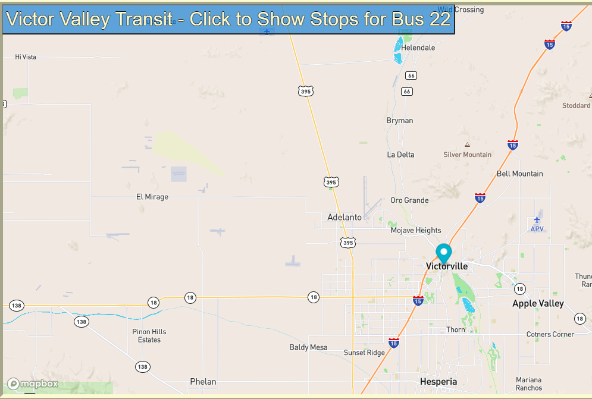

Real Time Bus Tracker
Real Time Bus Tracker
This program is called Real Time Bus Tracker. The tracking application will take the bus route for a provided transportation are and animate the stops with a map marker. As of now the grid locations of the bus stops are preloaded into the source code. The area used is for the Victor Valley Transit located in Southern California. The image demonstrates the actual animated map in the web application. The links will navigate to the program or the GitHub Repository for the program on an external page. Take a look and I hope you enjoy.
RealTime Bus Tracker
